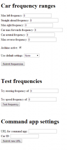
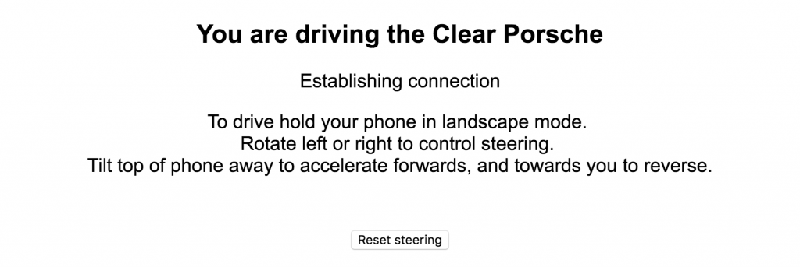
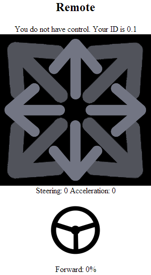
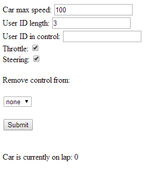
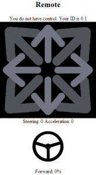

You’ve built the hardware of your very own Liberty Car. Now, set up the software from Github to make it, you know, work.
You should see something like this on the table in front of you:
{kind=link}
Now you need to set up the software to make it more fun.
Equipment
You’ll need:
- USB mouse
- USB keyboard
- HDMI cable
- HDMI TV/monitor/screen
- Micro USB cable (another one; not the one you butchered in the previous article)
- USB power supply (either a mains USB adapter plug or a PC/laptop which is turned on)
- Ethernet cable
- Ethernet port with internet access (there are usually a few in your internet router)
Setting up the software
Once you have everything let’s get started:
- Unplug the Raspberry Pi from the car.
- Plug the Raspberry Pi into an ethernet port with internet access.
- Plug the USB mouse and keyboard into the Raspberry Pi.
- Plug the HDMI cable into the HDMI port on the Raspberry Pi and an HDMI monitor/TV.
- Plug the micro USB cable into the Raspberry Pi and either a running computer or a USB mains adapter plug. The Raspberry Pi will now boot up.
- When the Raspberry Pi has booted, install Java by running the following command on the Raspberry Pi:
sudo apt-get install openjdk-7-jdk
I tend to install the JDK because there is enough space on the SD card and it will let us do some interesting things later on with the car. If, however, you’re concerned about space you can get the JRE by running this command instead:
sudo apt-get install openjdk-7-jre
Now you have Java installed, we need to set up a Liberty server with the Liberty Car web application.
- Install a Liberty development environment (WebSphere Developer Tools and Liberty profile runtime) on your computer using the latest builds.
- Import the Liberty Car web application as a Dynamic Web Project in Eclipse. Deploy the application to a Liberty beta server by following the same steps shown creating and deploying to a Liberty server in our hello world video tutorial.
- Install the Arduino user feature (available from GitHub here: https://github.com/WASdev/sample.arduino). Make sure you have the server.xml setup to match the server.xml in the root of the Github repository.
- Once you have the server configured, package it into a zip that you can put onto the Raspberry Pi:
- In Eclipse, right-click your server in the Servers view and select package server.
- In the options choose to ‘minify’ the server. This will then create a zip file containing the server, the application, and the necessary configuration.
- Use an FTP client to copy the zip file from your computer to the Raspberry Pi and unzip it. You have now installed Liberty profile on the Pi!
- On the Raspberry Pi, navigate into the
wlpdirectory that you unzipped and move to thebindirectory. - Run the command
sh server run car
(Assuming the server you created was called
car.) You should see the server start and, after a minute or two, the application should start. Don’t worry if the application gives you error messages abouti2c. The Raspberry Pi isn’t plugged into the car at the moment so it can’t see the car, which causes the error messages. - Set the Raspberry Pi to start the Liberty server when it boots instead of needing us to start it manually every time:
- Navigate to
/etc/init.dand then create a new file (I called minestartCar; no file extension is needed. - Inside that file put a line that reads:
sh /bin/server start car
Note that this is where you installed your Liberty server. By default, the installation created a folder called
wlp; you want to point to the bin folder inside thewlpfolder.
- Navigate to
- Shut the Raspberry Pi down and plug it all in as you did on Steps 9-21 in Part 1, making sure the last cable plugged in is the micro USB cable into the Raspberry Pi.
- Connect to the WiFi network of the car with your computer (you can use a phone or tablet to do this but it is easier done from a PC). There should be SSID and password info on a sticker on the router in the car.
- Once connected, go to the router’s admin page (normally
192.168.0.254for the TP link). Log in (default is username:admin, password:password) and look at the connected devices list. You should see two devices: one is your computer and one is the Raspberry Pi.
That page will let you see the IP address of the Pi. If you want, you can tell the router to always assign your Pi a specific IP address – we tend to do this to make it easy to connect to the Pi. - Go to:
<Ip of Pi>:9080/Liberty Car/configto see the following webpage:
 - There are 3 main areas on the configuration page:
- The top section is where you enter the PWM ranges for your car. Each car’s servo and ESC will take a slightly different range for steering and speed and the top section lets you modify the range (including the setting for neutral) to match your car’s hardware. This is currently not saved to disk and so you will need to do this every time, or go and edit the default values in the code and rebuild.
- The second part of the page is for testing values. If you enter a steering or speed value there, it will send that value to the car for 5 seconds. This will let you figure out the range of controls for the car. If you send both at a value other than 0 then it will only test steering.
- The final section is used for some additional functionality that is being worked on but isn’t ready yet for release. So ignore that for now and keep an eye out for future articles!
- Now you have the car signals configured it’s time to drive! Go to:
<IP of Pi>:9080/Liberty Car/remotewhere you should see one of the following pages (the newer, accelerometer based UI will appear if your device supports it, otherwise you will see the arrow based touchpad controls):

Accelerometer based UI

Touchpad based UI - At the top of the page you are told what your ID is. Open a new browser tab and go to:
<IP of Pi>:9080/Liberty Car/adminto open the admin page:
 - Enter your ID in the User ID in control field and click Submit.
- Go back to the direction pad and the message above the direction pad should now say
you are in full control. You can now drive the car!
{kind=link}
{kind=link}
{kind=link}
{kind=link}
The controls
To control the car go to <ip address of pi>:9080/LibertyCar/remote/index.html. This is the control page and will look like one of these pages:

The common part of the page is your ID is at the top of the page. This lets you know what your ID is, whether you have control or not, and if there are any communication errors.
If your device is a mobile phone or tablet (basically anything with accelerometers) then you will see the rotation based controls. Start by holding the phone in landscape mode, with the top of your phone on the left side. Once you have done that you can control the car using the following gestures:
- Rotate the phone left and right to turn the wheels – the more you turn left/right on your phone, the more the car will steer in that direction.
- Tilt the top edge of the phone away from you to accelerate forwards (up to when the phone is horizontal) – the more you tilt the phone, the faster the car drives.
- Tilt the top edge of the phone towards you to reverse the car – the more you tilt the phone, the faster it will go. If the car has been moving forwards it may take a couple of seconds before it starts reversing (this is usually a limitation in the car’s speed controller, which draws too much current if trying to reverse while moving forwards, hence the delay to allow the car to stop).
- Note that due to the way we track accelerometer data sometimes the steering will get stuck between full lock left and full lock right. If this happens there is a “reset steering” button at the bottom of the UI you can tap to immediately fix it.
If your device does not have accelerometers then we can’t steer it by tilting your device, so we revert to the touchpad controls for driving (which support either mouse or finger inputs):
- The black square with arrows on it is your control pad. Think of it much like a laptop’s touchpad in that it has a horizontal and vertical axis. You can only use 1 finger on the touch area at a time (two fingers will confuse it):
- You control the steering of the car with the horizontal position of your finger; the more left and right you move it, the more the car will turn left and right.
- The speed is controlled by the vertical position of your finger; the higher up you go the faster you move forwards, and the lower you go the faster you go in reverse.
- The centre of the grid is neutral; here you should be stationary with your wheels facing straight ahead (if not, go to the admin page and tweak your frequency settings).
- Underneath the touchpad is the outline of a steering wheel. This will turn as you move through the horizontal axis to show you how the car would turn. It’s used to test that your device is running the JavaScript correctly; if the wheel does not turn when you move your finger across the touchpad control, your browser isn’t running the JavaScript on the page properly (you do not need control of the car for this to work because it’s used for testing the web browser).
- Note if the car has been moving forwards it may take a couple of seconds before it starts reversing (this is usually a limitation in the car’s speed controller, which draws too much current if trying to reverse while moving forwards, hence the delay to allow the car to stop).
Very interesting will have to give this a try, thanks for your time yesterday.
May i controll this car from anywhere in the world via internet?
The car is running a WAS Liberty app server so getting remote access is the same as with any Java EE web app – if you connect the car to a router and give it a public IP address and/or setup port forwarding correctly then yes you could drive it from anywhere in the world. In fact Holly Cummins (one of the WAS Liberty developers) drove the car while it was in our UK lab live from a conference in Germany. The biggest problem when driving remotely comes as any video feed you have showing the car will add several seconds of latency when looking at long distances, which makes it harder to drive.
May you give me video tutorial for software setup function.This semester, i took this topics as a project.If you may give, i will be very grateful for your help.
Thanks in advance
Hello Tombanks,may i know the language that u used to build this project is it Java language?
Any resources that i can get the source code of this project in Phyton?
Hi – yes the project is in Java as it runs as a web application. The project was written from scratch so there is no Python version of the code I created for the web application – you can see the Java code from our Github account (https://github.com/WASdev/skunkworks.libertycar)
Very cool, Tom!
Thanks for posting the code. I can’t wait to see how you did security.
I just posted documentation/video of the Java-powered mini Roller I have been making. It is also controlled over WiFi.
http://electronics.onebeartoe.org/roller/usage/
https://github.com/onebeartoe/roller
Thanks for the links to the roller – I’ll go and have a look through it later today 🙂
As for security with the Liberty Cars it’s very basic as we authenticate based on the IP address of the user. I do it that way as it’s cheap and the cars are usually on their own isolated WiFi network which minimizes risk. My todo list does include adding basic role based security to the admin, config and driving pages which would be a proper security implementation.